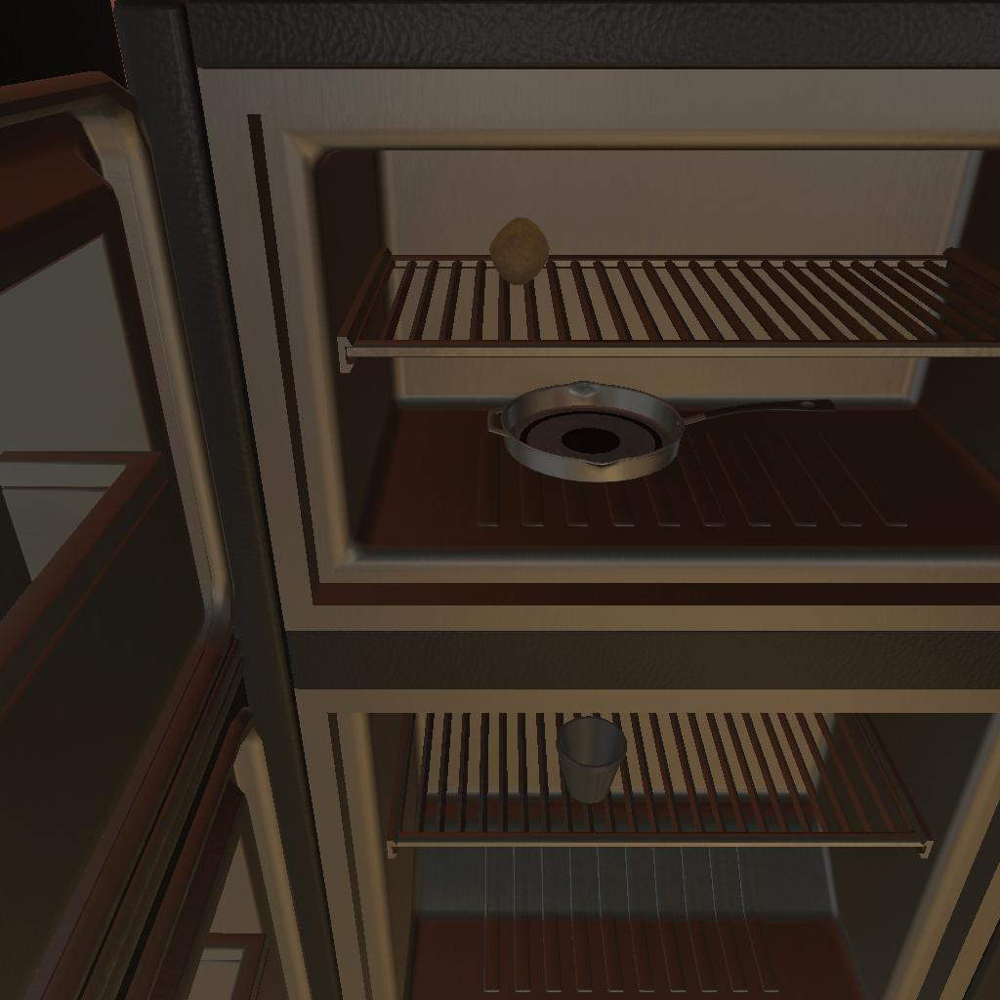

---------------------------------------------------------task: 15---------------------------------------------------------
--------------------------------------------------------------------------------------------------------------------------------------------------------------------
--------------------------------------------------------------------------------------------------------------------------------------------------------------------
Step:--------------------------------------------------------------------------5-------------------------------------------------------------------------------
----------------------------------------
VLM Prompt:
**Task**
Please perform as an embodied AI agent. Our final objective is to put a cool mug in coffeemachine. Below is the plan for completing the task, the current observation, alongside historical data and admissible actions for the next step. Please determine the best action for the next step!
**Plan**
Below is a detailed step-by-step plan to complete the task.
1. Find a mug.
2. Pick up the mug.
3. Find a fridge.
4. Cool the mug with the fridge.
5. Find a coffee machine.
6. Place the cooled mug in the coffee machine.
**Current Observation**
Displayed is an image capturing the current position of the agent.
**History Information**
Displayed are the previous observations with their corresponding actions.
State 1:
1. Step Index in the Plan: 1
2. Objects: Coffee Machine, Sink, Countertop
3. Action: go to cabinet 1
State 2:
1. Step Index in the Plan: 2
2. Objects: Wooden Door (possible cabinet door)
3. Action: open cabinet 1
State 3:
2. Step Index in the Plan: Not explicitly mentioned, but inferred to be the step after finding and opening the cabinet
3. Objects: Cabinet (opened), Kettle
4. Action: go to cabinet 2
State 4:
2. Step Index in the Plan: 3
2. Objects: Wooden Door (potential cabinet)
3. Action: go to fridge 1
State 5:
1. Step Index in the Plan: 4
2. Objects: Fridge (not currently observed)
3. Action: open fridge 1
**Admissible Actions**
(1): go to cabinet 1
(2): go to cabinet 3
(3): go to countertop 1
(4): go to cabinet 4
(5): go to cabinet 5
(6): go to cabinet 6
(7): go to cabinet 7
(8): go to drawer 1
(9): go to drawer 2
(10): go to cabinet 8
(11): go to drawer 3
(12): go to cabinet 9
(13): go to cabinet 10
(14): go to drawer 4
(15): go to microwave 1
(16): go to cabinet 11
(17): go to toaster 1
(18): go to cabinet 12
(19): go to cabinet 13
(20): go to cabinet 14
(21): go to cabinet 15
(22): go to countertop 2
(23): go to coffeemachine 1
(24): go to garbagecan 1
(25): go to countertop 3
(26): go to countertop 4
(27): go to sink 1
(28): go to stoveburner 1
(29): go to stoveburner 2
(30): go to stoveburner 3
(31): go to sinkbasin 1
(32): close fridge 1
(33): take pan 1 from fridge 1
(34): take cup 1 from fridge 1
(35): take potato 1 from fridge 1
**Analysis Guideline**
1. Analyze the history and current observation, and then determine our current step in the plan and our current place.
2. List all visible objects related to the task in the current observation, without summarizing any as "various items."
3. Analyze the objects in the current observation based on the history and the requirements for the current step, and then determine if we can complete the step with the current observation.
4. Analyze and decide on the most appropriate action to take.
5. Summarize the analysis using the following format: "Analysis: [The summarization of the analysis], The Most Appropriate Action: (i which is the integer.): [Selected action]"
**Notes**
1. We must complete each step of the plan in order and cannot skip steps when the previous ones are not finished.
2. For "Go to" actions listed as "go to xxx [n]", interpret this as there are n distinct actions available: "go to xxx 1", "go to xxx 2", ..., "go to xxx n". Select one specific action from these options instead of using "go to xxx [n]".
3. If receptacles such as drawers, cabinets, and so forth are closed in the current observation, we may try to open them.
4. Pay attention to synonyms and ensure clarity in the terms used.
5. We must determine and provide the single action which must be in the **Admissible Actions**.
6. If there is no history available, we are at the first step and the current place is "Unknown".
**Answer**
Please select the most suitable action by following the **Analysis Guideline**, keeping the above **Notes** in mind.
----------------------------------------
----------------------------------------
VLM Response:
Analysis: Based on the history information, we are currently at step 4 of the plan, which is "Cool the mug with the fridge." The last action taken was opening fridge 1. In the current observation, we see the inside of fridge 1 with a cup (mug), a pan, and a potato. Since our objective is to cool the mug, and we see a cup (which can be synonymous with a mug) inside the fridge, we can infer that this is the mug we need to cool. We do not need to perform any other "go to" actions because we are already at the fridge with the mug in sight. Therefore, the most appropriate action to take next is to take the mug out of the fridge to cool it.
The Most Appropriate Action: (34): take cup 1 from fridge 1
----------------------------------------
----------------------------------------
>>> Refine VLM Response and Get Pure Action: take cup 1 from fridge 1
----------------------------------------
-----------------------------------------------------------------
Running time: 10.657048463821411 seconds
Total Money: 0
-----------------------------------------------------------------
-----------------------------------------------------------------
Summarization Prompt:
**Context**
Analysis: Since there is no history information, we are at the first step in the plan, which is to find a statue. The current place is unknown. In the current observation, we see a floorlamp next to an armchair with a small table that has a small object on it, which could potentially be the statue we are looking for. Since the plan requires us to find a statue first and it appears there might be one on the table next to the armchair, we should investigate this object to determine if it is the statue we need.
The Most Appropriate Action: (1): go to armchair 1
**Summary**
1. Step Index in the Plan: 1
2. Objects: Floorlamp, Armchair, Small Table, Small Object (potential statue)
3. Action: go to armchair 1
**Context**
Analysis: Based on the history information, we are currently at step 4 of the plan, which is "Cool the mug with the fridge." The last action taken was opening fridge 1. In the current observation, we see the inside of fridge 1 with a cup (mug), a pan, and a potato. Since our objective is to cool the mug, and we see a cup (which can be synonymous with a mug) inside the fridge, we can infer that this is the mug we need to cool. We do not need to perform any other "go to" actions because we are already at the fridge with the mug in sight. Therefore, the most appropriate action to take next is to take the mug out of the fridge to cool it.
The Most Appropriate Action: (34): take cup 1 from fridge 1
Please summarize the context by following above examples when providing the summary, and ensure that only the summary is included, without any extra explanation.
**Summary**
-----------------------------------------------------------------
-----------------------------------------------------------------
Summarization Response:
1. Step Index in the Plan: 4
2. Objects: Fridge 1, Cup (Mug), Pan, Potato
3. Action: take cup 1 from fridge 1
-----------------------------------------------------------------
-----------------------------------------------------------------
Text Observation:You pick up the cup 1 from the fridge 1.
-----------------------------------------------------------------
UNSUCCEED